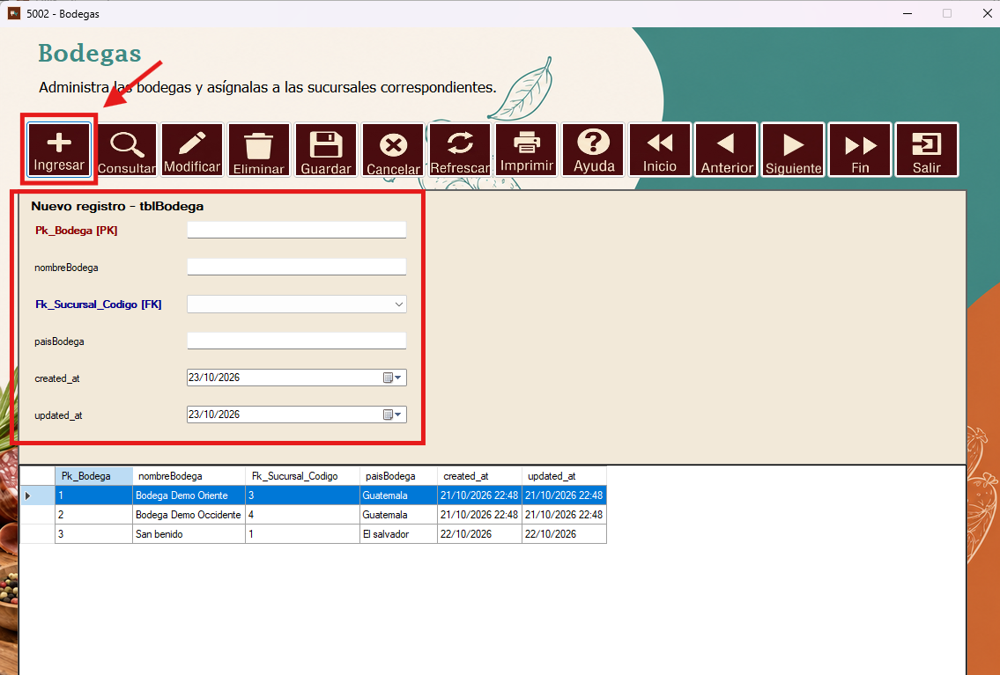
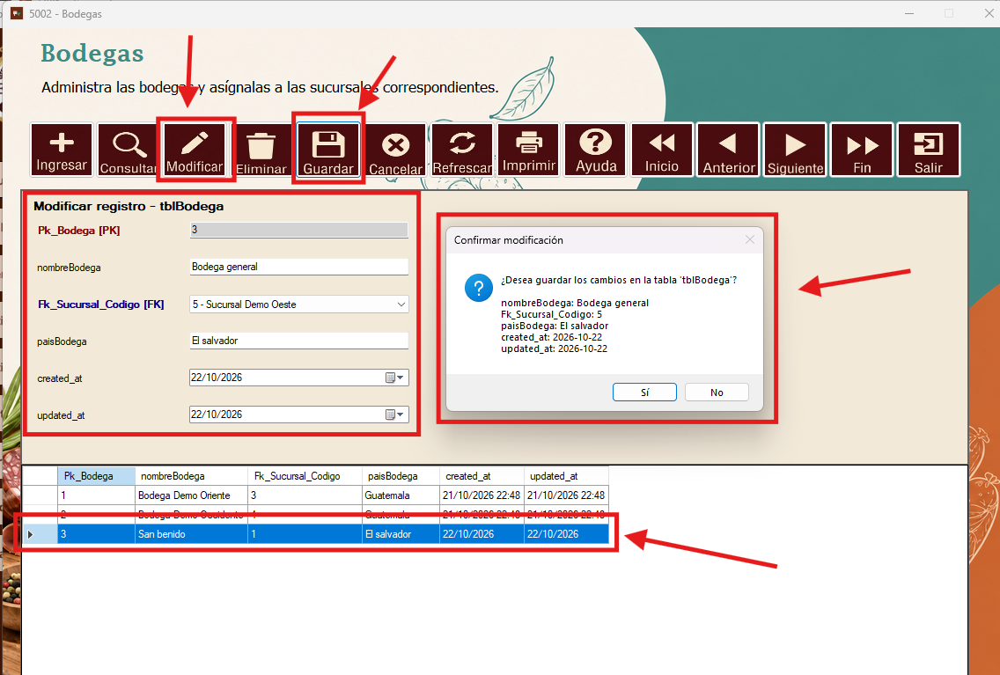
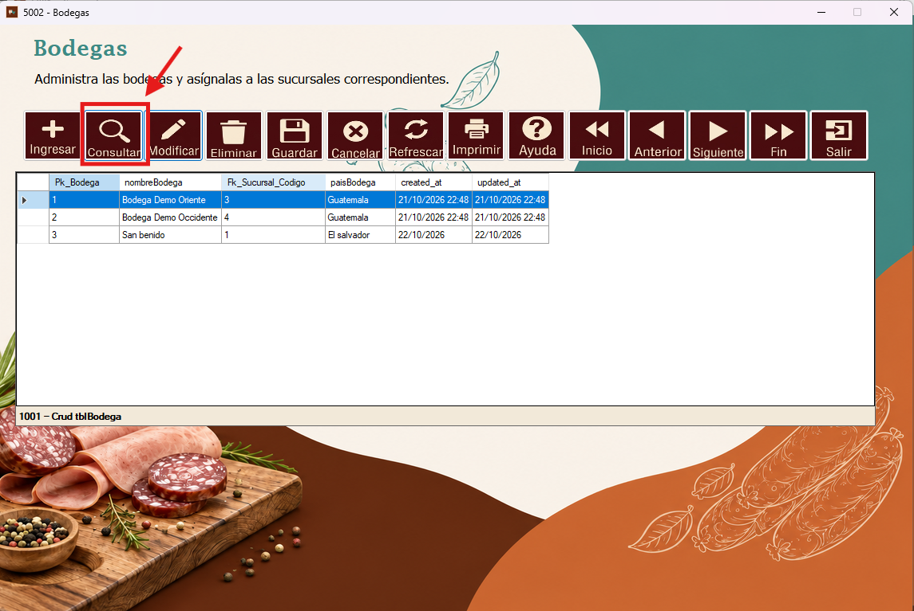
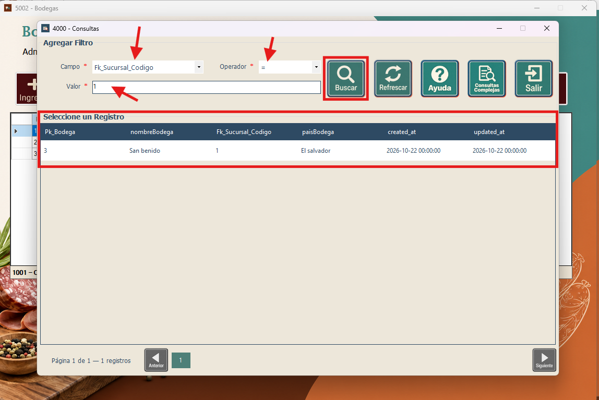
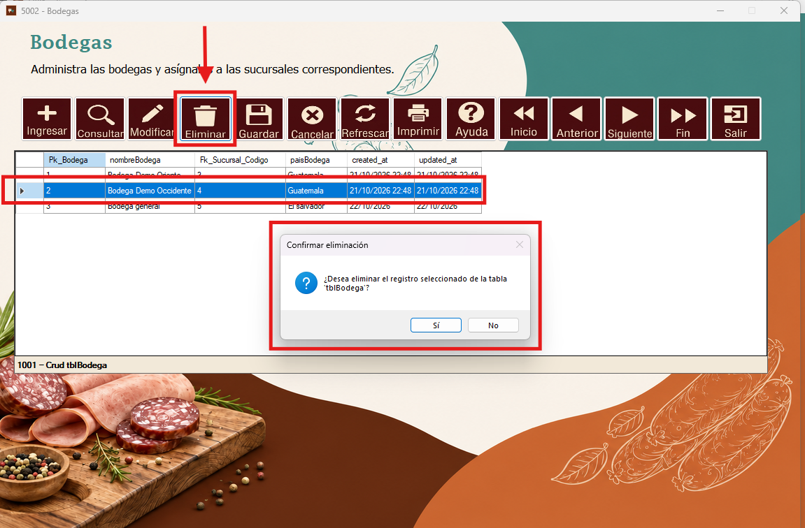
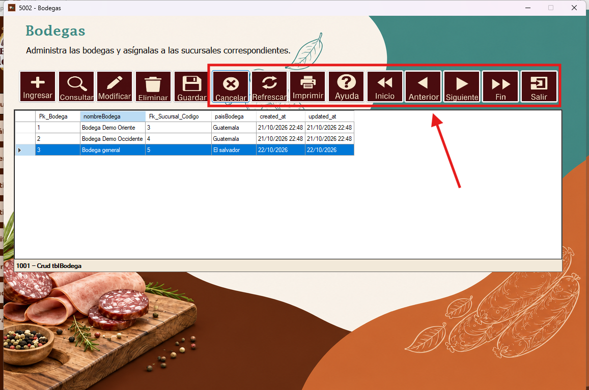

Entre las opciones se encuentra el botón “Ingresar”, que despliega los campos del formulario para registrar una nueva bodega. Se ingresan los valores correspondientes y luego se presiona el botón “Guardar”.

Si se desea modificar algún valor de un registro, primero se selecciona el registro. Después, se presiona “Modificar”, se realizan los cambios y se hace clic en “Guardar”. El sistema solicita confirmar la modificación.

Para consultar los registros, se presiona el botón “Consultar”. Esta opción permite buscar la información registrada de las bodegas.

En la ventana de consultas se selecciona el campo, el operador y el valor que se desea buscar. Después se presiona “Buscar” y los resultados filtrados aparecen en la tabla inferior.

Si se desea eliminar un registro, se selecciona la bodega correspondiente, se presiona el botón “Eliminar” y se confirma la solicitud en la ventana que aparece.

Los botones restantes permiten cancelar una acción, refrescar los registros, imprimir reportes, acceder a la ayuda, desplazarse entre los registros con Inicio, Anterior, Siguiente y Fin, o salir del formulario.
